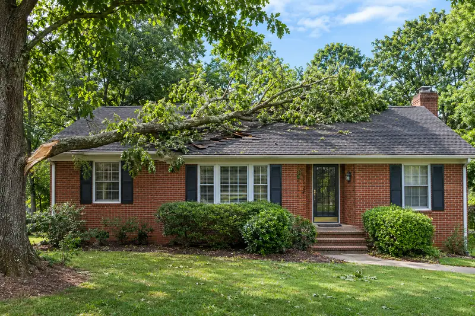
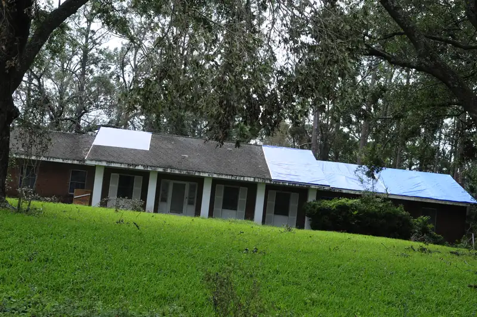

Storm damage
Think a storm damaged your roof? Start here.
A few missing shingles can leave you with a lot of questions. We’ll help protect your home, inspect the damage and work out what comes next.
Storms near you
Checking the Weather Service.
From National Weather Service alerts and storm reports for our 12 counties, checked several times an hour.
Storms at your address
The first hour
- Check on people first. Call 911 if anyone is hurt.
- Put buckets and towels under the drips, and move what can't get wet.
- Keep people and pets away from a bulging or sagging ceiling.
- If water is coming in near a light fixture, switch off that breaker, as long as you can reach the panel without walking through water.
- Stay off the roof.
- Call or text (865) 567-0233.
Our post on what to do when your roof is leaking has more on slowing the water down.
What happens when we inspect
Storm damage isn’t always visible from the driveway. We check the roof for signs of wind and hail damage, photograph what we find and explain which repairs will protect your home.
You’ll have photos and a roofing estimate to share with your insurance company. We can meet your adjuster to walk through the damage and repair scope, then provide completion documents when the work is finished.
What you pay out of pocket
When your insurer pays for the roof, your share is your policy's deductible, plus any upgrade you choose that your policy doesn't cover, such as a heavier shingle or metal instead of shingles. We do not waive or cover your deductible. For work outside a claim, we’ll quote the repair or replacement before you decide. You can explore a budget range or read about payment options.
When your adjuster approves the damage
We meet your adjuster, show the damage and explain the repairs your roof needs. We prepare a construction estimate including the items current code requires, such as drip edge, and ice and water shield where the local code calls for it. If the existing shingles are discontinued or difficult to match, we document that for the adjuster too. The aim is to have the necessary work considered together, including details that can be missed in a first inspection.
Damage insurance usually doesn't cover
Homeowner's policies pay for sudden damage from a covered event, like a hailstorm or a wind-torn roof. They usually don't pay for:
- A roof that's simply old or worn out.
- Damage from neglect, like a leak left alone until the deck rotted.
- Damage from an earlier storm that was never repaired.
- Cosmetic damage, on some policies: dents in metal that don't let water in, for example.
Your policy is the final word. The exclusions section spells it out, or your agent can tell you. If your roof isn't covered, we still give you a written price to repair or replace it.
Repair or replace after a storm
If the damage sits in one area and the roof has good years left, it's a repair. If the storm hit several slopes, or the roof was near the end anyway, you'll get a replacement price next to the repair price so you can compare.
We handle the insurance side
We work directly with your insurance company, from the first call to the final check. We photograph and document everything your adjuster needs, meet your adjuster on your roof and walk them through every bit of damage we found. Then we make sure the approved scope covers what your roof actually needs, code upgrades included, so you get the coverage you're paying for.
If you sign a roofing contract that depends on your insurance claim and your insurance company tells you in writing the damage isn't covered, you can cancel until midnight of the third business day after that notice. That's Tennessee law (T.C.A. § 62-6-603), and money you paid, other than for emergency repairs you agreed to in writing, comes back within ten business days (§ 62-6-604).
The insurance claims help page walks through it step by step. Someone knocking on doors after the storm? Read what to know before you sign.
Hail
Hail leaves round dark spots where it knocked the granules loose, plus dents in gutters, downspouts and roof vents. The slopes that faced the storm take the worst of it, and the bruises often sit on a back slope you can't see from the driveway. The hail damage guide shows what to look for.
Wind
Wind creases shingles across the middle or peels them off along the edges and the ridge. A shingle that lifted and creased has lost its seal, even if it lies back down. After a strong blow, walk around the house and look for shingle pieces in the yard and bare strips along the ridge. The spring storms guide covers wind damage in more depth.
A tree on the roof
Get everyone out of the room under it and close the door. Check for downed power lines from a window before you step outside, treat any line touching the tree as live, and call the power company. The tree crew goes first and the roofer second, because nobody can tarp a roof with a trunk lying on it. Our post on a tree on the roof walks through that first hour.

Ice
Winter here brings more ice than snow. Freezing rain coats limbs until they snap onto the roof. Wind finds shingles that have lost their seal, and cold, stiff shingles crack instead of bending. Then a thaw sends water into any gap at a chimney, a vent pipe or a skylight. The winter storm guide covers the morning after.
Tarping and emergency repair
Temporary protection can help limit water damage until the roof can be repaired. Depending on the damage and conditions, that may mean tarping, replacing loose shingles or sealing an opening. We’ll explain what can be done safely and what lasting repair the roof needs. See emergency repairs.
What to photograph
- The outside of the house from a few angles, before anything gets moved.
- How a tree is lying on the roof, before the tree crew cuts it.
- Ceiling stains, wet floors and anything inside that broke.
- Shingle pieces in the yard and dents in gutters and vents.
- The date and time the storm came through.
What a roof replacement includes
A replacement starts by removing the old roof and checking the decking underneath. We replace damaged wood, install the underlayment and shingles, and take care of flashing, pipe boots and ventilation. We install drip edge. Ice and water shield at the eaves where the local code calls for it, and in the valleys and around chimneys and skylights, where water collects. The job ends with debris removal and a magnetic sweep for nails. Your estimate sets out the work and cost.
Storm questions
What should I do first after a storm hits my roof?
Get everyone out of any room where the ceiling took a hit, and look for downed power lines from a window before you go outside. Put buckets under the drips and move what can't get wet. Take photos and video of the damage from a few angles before anything gets moved, and stay off the roof. If a tree is on the house, the tree crew goes first. Then call or text (865) 567-0233 to get a tarp on.
After a storm, should I call my insurance company or a roofer first?
Start with an inspection so you know what damage is there and what repairs may cost. If you file a claim, we provide photos and an itemized construction estimate, and meet your adjuster to explain the work. Your insurer decides coverage.
My roof is leaking right now. What do I do?
Put a bucket under the drip and move anything valuable. Keep people away from a bulging or sagging ceiling. Take photos, and stay off the roof in the rain. Then call or text (865) 567-0233. Emergency calls are answered around the clock.
Do I have to use my insurer's roofer?
No. Your insurer may send you a list of roofers it works with, and you can call one of them if you like. You can also hire your own. The roofer you hire works for you, not for the insurance company. Pick the one whose written estimate and straight answers you trust.
Let’s check your roof.
Call about urgent damage, or request an inspection. We’ll help you take the next step.
Rather talk? Call (865) 567-0233. Rather text? Send a photo.
What happens next
- We’ll call to set up your free inspection.
- We’ll look over the roof and explain what it needs, with an estimate if work is required.
Your project, complete
- A final walkthrough to review the completed work and answer your questions.
- A clean property, with debris removed and a magnetic sweep for nails.
- Completion documents and manufacturer warranty information for your records.